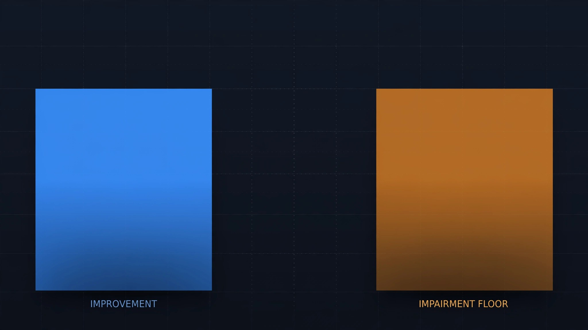

The Rate Hit 0.99. The Impairment Floor Is 0.20. Do the Math.

NHTSA announced in July that Q1 2026 traffic fatalities dropped to 7,770 deaths at a rate of 0.99 per 100 million vehicle miles traveled, the first quarterly figure below 1.0 in over a decade, a number the agency celebrated by crediting safer vehicles, better enforcement, and collaborative state-level partnerships while somehow neglecting to mention that one in five of those dead drivers had impairing substances in their blood.[1]
FARS toxicology data from 490,736 drivers killed in fatal crashes between 2014 and 2023 shows a 20.0% positive-test rate for any impairing substance, including alcohol, drugs, or both.[2] Apply that baseline to Q1 2026's body count and you get roughly 1,554 impairment-related fatalities in ninety days, which works out to seventeen people per day, every day, throughout America's safest quarter since 2014.
Strip those 1,554 deaths from the ledger and the rate drops from 0.99 to approximately 0.792, leaving a gap of 0.198 per 100 million VMT between the impairment-free rate and the actual one. That gap is the impairment floor: the portion of the national death toll that no airbag, crumple zone, or automatic emergency braking system can touch, because the driver behind the wheel was too drunk or too high to benefit from any of it.
Now compare it to the improvement everybody is celebrating. In 2024, the annual fatality rate was 1.19 per 100 million VMT; Q1 2026 delivered 0.99, yielding a total improvement of 0.20. Impairment floor: 0.198. Within rounding error, identical. Twenty years of airbag upgrades, electronic stability control mandates, automatic emergency braking adoption, lane-departure warnings, and structural crashworthiness overhauls bought America an improvement that is, in magnitude, exactly equal to the behavioral problem it never bothered to address.[3]
What should disturb engineers is how uniform the impairment rate remains across vehicle classes that share almost nothing else in common: FARS reports 20.4% for sedans, 20.1% for pickups, 19.5% for SUVs, 18.1% for vans, and 22.5% for sports cars, a spread of merely 4.4 percentage points across five categories that differ in curb weight by a factor of three, sticker price by a factor of five, and per-mile death rate by a factor of twenty-five. Impairment does not sort by what you drive, how much you paid, or how safe the engineering is. It is a flat tax levied uniformly on the national death toll, and no Federal Motor Vehicle Safety Standard can legislate it away.
Limitations worth naming: the 20% figure captures all positive toxicology results, including drivers killed by sober at-fault motorists who merely happened to test positive for cannabis, and drug-testing protocols vary so dramatically by jurisdiction that FARS drug positivity is widely acknowledged to undercount actual prevalence.[4] Q1 2026's actual impairment rate may differ from the ten-year aggregate, and seasonal effects make Q1 the most favorable quarter for rate comparisons because winter reduces recreational driving and motorcycle exposure.
Strongest counterargument: NHTSA's own alcohol-impaired crash definition, which requires a BAC at or above 0.08 g/dL, attributes closer to 30% of all fatal crashes to impairment rather than the 20% our broader any-positive methodology yields, meaning the impairment floor under NHTSA's own standard is larger than the entire improvement, not merely equal to it. An optimistic reading says we overestimate the floor by counting non-causal positives; a pessimistic reading says we underestimate it because roughly half of states fail to toxicology-test all drivers killed in fatal crashes. Neither reading alters the structural conclusion that two decades of vehicle engineering have been spent closing a gap that a functioning impaired-driving prevention mandate could have eliminated in 2006.
If you want the rate below 0.80, keep building better cars. If you want it below 0.60, build a sober driver. Congress tried: Section 24220 of the Bipartisan Infrastructure Law required NHTSA to issue a final rule on impaired-driving prevention technology by November 2024.[5] It is August 2026. No rule exists. No advance notice of proposed rulemaking exists. No timeline exists. The impairment floor remains exactly where the industry left it, absorbing every tenth of a point that crashworthiness engineers claw back, converting their life's work into a rounding error.
Sources & References
- Reuters, “US traffic deaths fell sharply in early 2026,” July 8, 2026. reuters.com
- NHTSA, Fatality Analysis Reporting System (FARS), 2014–2023 toxicology data. nhtsa.gov
- NHTSA, “Traffic Deaths Declined Significantly in 2025,” 2026. Annual rate of 1.10 per 100M VMT for 2025; 2024 rate of 1.19. nhtsa.gov
- GHSA / DISA, “The Growing Impact of Drugged Driving on Workplace Safety.” Drugs present in 43% of fatally injured drivers with known test results, but testing protocols vary widely. disa.com
- Bipartisan Infrastructure Law, §24220. Required NHTSA to issue an advance notice of proposed rulemaking on impaired-driving prevention technology within 2 years (by November 2023) and a final rule within 3 years (by November 2024). Neither deadline was met.